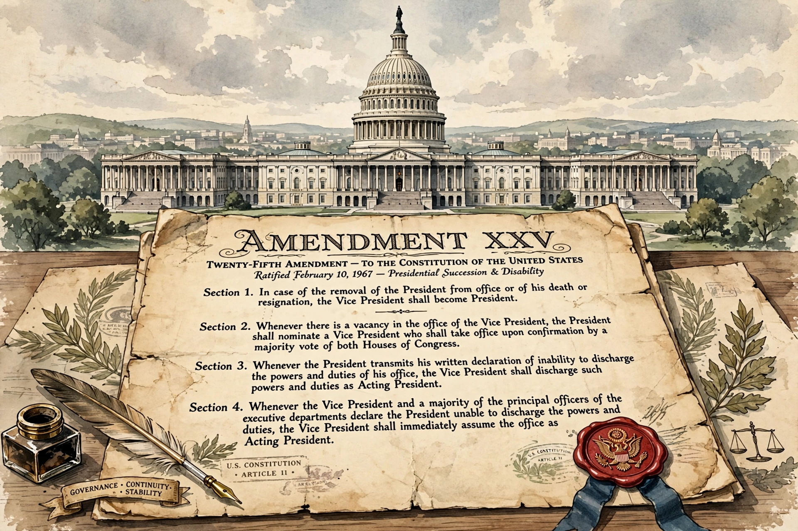

The Twenty-fifth Amendment (Amendment XXV) to the United States Constitution addresses issues related to presidential succession and disability. It clarifies that the vice president becomes president if the president dies, resigns, or is removed, and establishes procedures for filling a vacancy in the vice presidency and for responding to presidential inability to discharge the powers and duties of office.

| Twenty-fifth Amendment | |
|---|---|
| Proposed | July 6, 1965 |
| Ratified | February 10, 1967 |
| Location | National Archives |
Section 1 provides that the vice president becomes president upon the president's removal, death, or resignation. Section 2 allows the president to nominate a new vice president, confirmed by a majority of both houses of Congress — used for Gerald Ford in 1973 and Nelson Rockefeller in 1974. Section 3 allows a president to voluntarily transfer power temporarily, as during medical procedures. Section 4 allows the vice president and a majority of the Cabinet (or another body designated by Congress) to declare the president unable, a provision never used to involuntarily remove power, though debated at several moments.
Ambiguities after William Henry Harrison's death, Woodrow Wilson's incapacitating stroke, Dwight Eisenhower's illnesses, and the assassination of John F. Kennedy in 1963 — when there was no mechanism to replace Vice President Lyndon Johnson as vice president — drove reform, led by Senator Birch Bayh.